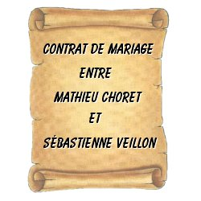
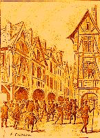
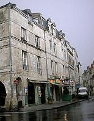
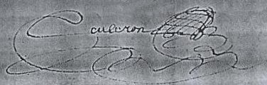

|

French version
HOME
ORIGINS
ENGAGÉ
MARRIAGE
TRAVEL
FAMILY
DEATH
SÉBASTIENNE
DESCENDANTS
SOURCES

SIGN
MY GUEST
BOOK
| |
|

| Mathieu
returns to
France |
|
Following
his contract of service with the Jesuits, Mathieu leaves Canada
on October 31, 1646 in the company of Robert Hache, another
worker. Leaving so late is risky because of the ices in the river and
the storms in the North Atlantic.
On
the return trip, if it is considered that the westward winds
make it possible to cross the Atlantic in only five weeks,
Mathieu probably returns to France in December.
He must have lot of things to tell with his family
and his friends! But
what presses more for him is to marry.
On february 26, 1647 he is in front of the notary Pierre
Teuleron to sign a marriage contract with a young lady named Sébastienne
Veillon.
Did
Mathieu know Sébastienne before his departure for Canada? Did Mathieu come as a scout to Canada to see whether they
could live there? Or
did he decide to marry only upon his return?
At that time the marriages "are arranged" by
the parents, and the romantic aspect is absent from the event.
Is it necessary for Mathieu to use a good amount of
persuasion to convince Sébastienne to leave her family and her
country to follow him to New-France?
Did he"embellish the truth" about the rigourous
canadian winter, the iroquoise wars which occur since 1641, the
hardship to clear the ground?
Did he ask his friend Robert Hache, serving as witness to
the marriage, to support his statements and help convince Sébastienne
of the opportunity of their departure?
Or, most probably, Sébastienne
simply did not have the choice:
"She who takes a husband, takes a country"? |
|

|
| Sébastienne
Veillon |
|
Sébastienne
Veillon is the daughter of Maixent Veillon and Bernarde Venet.
She is from Verdille in Poitou, located about 10 miles
from La Rochelle.
The province of Poitou appears among the
thirty-three governments which subdivide France under the old
regime. It is
bordered to the north by Brittany, to the west by the Atlantic
Ocean, and to the south by Aunis whose capital is La Rochelle.
From the
geographical point of view, Poitou is a ground undulated in low
clay hills, with some plateaus on drier limestone plates.
This province is sprinkled by many rivers taking however
their source in other provinces.
The marsh poitevin progressely filled by the sea, will be
the theatre of the first saltworks whose product will feed the
maritime trade for centuries. Starting in the 16th century, more and more dry land gains
ground on these marshes from which the most fertile sectors
allow for cultivation of the land and animals.
The climate is moderate and oceanic and vegetation
of the southernmost type. These
climatic conditions support multiple cultures such as those of
corn, vinyards, fruits, etc.
The province of Poitou must be regarded as one of most
fertile of France. |
|
|
|
Marriage
contract
|

While
clicking on the parchment you will find the transcription of the
marriage contract of Mathieu and Sébastienne, and an attempt at
partial translation.
This contract, discovered by the genealogist
Archange Godbout, is in fact only one sentence long with the
legal turnings of the time.
The punctuation were added by the copyist, but one can
extract much information from it.
|
|
At
La Rochelle, the afternoon of February
26, 1647, Mathieu and Sébastienne are joined
together with parents and friends at Pierre Rouyer’s to sign
their marriage contract in front of the royal notary
Pierre Teuleron and his two clerks.
Reading from this contract we can learn several
facts concerning the couple
 Initially, this document
gives us the name of the parents of each engaged couple.
Initially, this document
gives us the name of the parents of each engaged couple.
Mathieu is known to live
in Montreal. He has
thus left Canada with the firm intention of returning there.
Sébastienne lives La
Rochelle, although originating from Poitou.
Mathieu is orphaned of
father.
Sébastienne is orphaned
of mother.
Sébastienne has an uncle,
a grandfather or a maternal cousin of the name of Thomas Venette
who is an honorable merchant of La Rochelle and gives consent to
the marriage.
Among the witnesses one
finds also a Marie Venette, aunt, grandmother or cousin of Sébastienne
on the side of her mother.
The signature of the
contract is done in a private house, in a friend of Mathieu’s,
Pierre Rouyer. He
is also witness to the marriage, he
is a master carpenter and cantor of St-Jean-du-Perrot,
another parish of La Rochelle (there were five parishes).
Saint-Jean-du-Perrot, and
Saint Nicolas, represent the sail districts. These two parishes were in the beginning two small islands
with chapels. The
district of Perrot was that of Hospital of Saint-Jean-de-Jérusalem
where the pilgrims arrived coming from Holy Land and had to
remain in quarantine. The chapel Saint-Jean des Hospitaliers became the church
Saint-Jean-of-Perrot when the district was connected
definitively to the city.
The notary and his two
clerks thus present themselves at residence to sign the marriage
contract.
There are many people for
this contract signing, one counts them as at least seventeen and
all did not sign. It
thus seems that this event is significant and probably the
occasion to have a good meal.
The future husband and
wife are both illiterate, and cannot sign at the bottom of their
marriage contract.
They are both adults,
therefore they are more than twenty-five years old since the
majority at the time is reached at twenty-five years.
|
|
Pierre
Teuleron, royal notary
Pierre Teuleron is the
most important notary of La Rochelle during the 17th century.
He practices from1631 to 1681.
He treats all kinds of contracts, but more especially the
commercial acts, among which are the contracts of service for
the "thirty-six month" for New-France. |
|
 |
SHis study is located at
the canton of the Flemings, very close to the port, where the
merchants, ship-owners, and captains of ship gather daily , so
much so that chains bar the entrace and access between eleven
and one in order
not to disturb the negotiations. The rochelais historian, father Coutant, locates the Teuleron
house at number 12 of the current street Chef-de-Ville. |
 |
|
 |
|
|
| Marriage |
|

Mathieu and Sébastienne
marry Monday March 4, 1647
in the parish of Notre-Dame-de-Cougnes at La Rochelle, in the
Ste-Marguerite chapel.
The Marriage
certificate is found in the Library of La Rochelle.
"Le quatre ont
esté espousés Mathieu Chauré d'une part et Sébastienne
Veillon d'autre part tous deux de cette paroisse après la
publication des bans, les tesmoings M. François Pierre Royer,
chantre de Saint-Jean du Perrot, Philippe Cadet, M. Robert
Hache, Zacharie Maloiseau et autres"
Signatures: Prévot,
prêtre de L'oratoire de Jésus, François Pierre Royer,
Zacharie Maloiseau, Philippe Cadet. |
|
|
| Departure
for Canada |
| All indicates that
Mathieu and Sébastienne leave the port of La Rochelle during
the following weeks bound for Canada where they settle in the
area of Quebec.

Perhaps they travel with
their friend and marriage witness, Robert Hache. Unquestionably, Hache also returns to Canada since, the
following year, he is the godfather of the first son of Mathieu
and Sébastienne. One
finds him also at a certain time to be a storekeeper of the
Jesuits in Quebec. As
for Mathieu, he returns
to Canada with a one year old contract as engaged of the Jesuits. Without official proof, it seems that Mathieu Choret is the
first resident of Canada to marry in France and then to bring
his wife back to the country. |
|
|
|
|